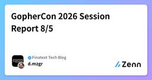

Finatext Tech Blogのフィード
https://zenn.dev/p/finatext
AI時代の金融インフラを提供するFinatextグループのテックブログです。
フィード

自作BIツール × DWHで挑むデータの民主化
Finatext Tech Blogのフィード
はじめにこんにちは！株式会社ナウキャストでデータエンジニアをしている浅宮です。普段は、グループ企業の株式会社スマートプラスクレジットが提供するクレジットインフラ「Crest」向けの分析基盤(DWH)を、Snowflake 上で構築・整備しています。この記事は、2026 年 5 月に行われた社内 AI コンテストに、Crest-BI×DWH という 4 名のチームで参加した体験記です。基盤を作るナウキャストメンバーと、業務システムである Crest を作るスマートプラスクレジットのエンジニアが一緒にチームを組み、「非エンジニアがDWH にGUIでクエリできる自作 BI ツール」 の...
2日前

GopherCon 2026 Session Report 8/5
Finatext Tech Blogのフィード
こんにちは。デニスです。私は今、GopherCon 2026 に来ています！今年は涼しいシアトルで開催され、日本の猛暑から逃れてきた身としては、それだけでもう来た甲斐があったと感じています。会場はダウンタウンにあるSeattle Convention CenterのSummitビルで、世界中からGopherが集まります。私自身、アメリカのGoカンファレンスに現地参加するのは今回が初めてです。去年はベルリンで開催されたGopherCon EUに参加しましたが、やはり本番のアメリカは規模が違います。一日目は、CTF、TinyGoのハッキングとワークショップに参加し、夕方からの懇親会では...
2日前

LLM Wikiパターンの標準化 OKF(Open Knowledge Format) 136
136
Finatext Tech Blogのフィード
Open Knowledge Format（OKF）— LLM Wikiパターンの標準化ナウキャストで長期LLMインターンをしている北川です。LLM系のタスクのキャッチアップをする中で、最近「OKF」という技術を耳にする機会が増えました。OKFはまだ登場したばかりの仕様で、その概念を理解するにはRAGやLLM wikiといった周辺技術への理解が欠かせません。しかし、OKF関連の記事の多くはOKF単体の説明にとどまっており、それだけでは体系的に理解しづらいと感じています。OKFはこうした周辺技術を前提として設計された概念でもあるため、それらへの理解があって初めて実感を持って捉えられ...
3日前

Local LLM で画像の PII マスキングを試してみた
Finatext Tech Blogのフィード
TL;DRローカルLLMを使ったPIIマスキングの検証を行いましたLLMの適用箇所をテキストに限定することで、実用的な速度で処理できることがわかりました 1. はじめにFinatextでは5月にAIコンテストが行われ、私の参加したチームでは動画からマニュアルつくるくんを作りました。詳しくは以下の記事をご覧ください。【AIコンテスト参加録】入社3ヶ月目でAIコンテストに出てなんとか受賞した話簡単にいうと、アプリケーションを操作した動画をAIに渡すと、操作手順をマニュアル化してくれる、というものです。さて、そのアプリケーションをコンテストで発表した際に、個人情報(P...
11日前
AI Engineer World's Fair 2026参加レポート: そしてAI Native Developmentへ
Finatext Tech Blogのフィード
こんにちは！ナウキャストのよーたです。データ&AIソリューション事業部にてAI Full-Cycle Engineerという職種でAIエージェントの開発やデータ基盤の整備を行っています。これまでの記事では、AIE WFで聞いた内容をもとに、EvalsとContext / Harness / Loop Engineeringについて整理しました。https://zenn.dev/finatext/articles/d75fe540a1b5ffhttps://zenn.dev/finatext/articles/b69dd40f105b82今回の記事では、より開発プロセス全...
12日前
AI Engineer World's Fair 2026参加レポート: Context/Harness/Loop Engineering
Finatext Tech Blogのフィード
こんにちは！ナウキャストのよーたです。データ&AIソリューション事業部にてAI Full-Cycle Engineerという職種でAIエージェントの開発やデータ基盤の整備を行っています。前回の記事では、AIE WFで聞いたEvals and Agent Improvementの内容をもとに、エージェントの失敗をどう観測し、評価し、改善につなげるかを整理しました。https://zenn.dev/finatext/articles/d75fe540a1b5ff今回の記事では、もう少しエージェントシステム全体の設計に踏み込み、Context Engineering / Har...
15日前
「Developers Summit 2026 Summer」出展レポート
Finatext Tech Blogのフィード
2026年7月16日（木）〜17日（金）ＪＰタワー ホール＆カンファレンスで開催された「Developers Summit 2026 Summer」に、Finatextホールディングスとしてブース出展をしてきました！ブースの様子や会場の雰囲気をご紹介します。 0. Developers Summit 2026 Summer とは？「Developers Summit Summer」は翔泳社主催のITエンジニア向けの一大カンファレンスです。初日は「IT Strategy Summit」と併催され、7月16日〜17日の2日間の日程で開催されました。今回のテーマは「事業成長を止めな...
16日前
AI Engineer World's Fair 2026参加レポート: エージェントの失敗をどう観測し、評価し、改善へつなげるか
Finatext Tech Blogのフィード
こんにちは！ナウキャストのよーたです。データ&AIソリューション事業部にてAI Full-Cycle Engineerという職種でAIエージェントの開発やデータ基盤の整備を行っています。先日AI Engineer World's Fair 2026に参加してきました。AI Engineer World's Fair（以下AIE WF）は、AIエージェントやLLMアプリケーションの開発・運用に関する実践知が共有されるサンフランシスコで行われた技術カンファレンスです。今回参加した中で、特に実務に直結すると感じたテーマの1つが Evals and Agent Improveme...
17日前
「if client1 {} else {}」を書かないために - 個社カスタマイズに耐えうるマルチテナントBtoBの設計と運用
Finatext Tech Blogのフィード
!この記事は、デブサミ夏カウントダウンブログリレー2026に参加しています。当社ブースで 「テックブログを見て来ました！」 とお伝えいただいた方には、もれなくFinatextグループのテックブック（物理本）を差し上げます！👇️Developers Summit 2026 Summer 事前登録はこちらから（7/13 13:00締切）https://event.shoeisha.jp/devsumi/20260716 TL;DRBtoBのマルチテナントプラットフォームを単一コードベースで運用しています個社カスタマイズの要望は「パラメータ化 / Hooks」で、標準機能 +...
25日前
採用業務をフルサイクルで支援するAIエージェント基盤
Finatext Tech Blogのフィード
!この記事は、デブサミ夏カウントダウンブログリレー2026に参加しています。当社ブースで 「テックブログを見て来ました！」 とお伝えいただいた方には、もれなくFinatextグループのテックブック（物理本）を差し上げます！👇️Developers Summit 2026 Summer 事前登録はこちらから（7/13 13:00締切）https://event.shoeisha.jp/devsumi/20260716Finatextで技術広報 兼 エンジニアをしている五十嵐です。Finatextグループで実施されたAI+コンテストに、採用と広報の混成チームで出場し、採用業務を支援...
1ヶ月前
AIワークフローでマイクロサービスのドキュメント管理を自動化してみた
Finatext Tech Blogのフィード
!この記事は、デブサミ夏カウントダウンブログリレー2026に参加しています。当社ブースで 「テックブログを見て来ました！」 とお伝えいただいた方には、もれなくFinatextグループのテックブック（物理本）を差し上げます！👇️Developers Summit 2026 Summer 事前登録はこちらから（7/13 13:00締切）https://event.shoeisha.jp/devsumi/20260716 はじめにFinatextに今年新卒で入社し、証券事業部でサーバーサイドエンジニアをしているAkinobuです。Finatextグループの証券事業では、証券プラ...
1ヶ月前
社内のAI活用知見を共有しやすくできないか？ AIコンテストでClaude CodeのSkillを試作した
Finatext Tech Blogのフィード
!この記事は、デブサミ夏カウントダウンブログリレー2026に参加しています。当社ブースで 「テックブログを見て来ました！」 とお伝えいただいた方には、もれなくFinatextグループのテックブック（物理本）を差し上げます！👇️Developers Summit 2026 Summer 事前登録はこちらから（7/13 13:00締切）https://event.shoeisha.jp/devsumi/20260716こんにちは！ナウキャストのよーたです。データ&AIソリューション事業部で、AIエージェントの開発やデータ基盤の整備を行っています。 はじめにFinat...
1ヶ月前
SaaSの業務オペレーションを、AIオペレーターに
Finatext Tech Blogのフィード
!この記事は、デブサミ夏カウントダウンブログリレー2026に参加しています。当社ブースで 「テックブログを見て来ました！」 とお伝えいただいた方には、もれなくFinatextグループのテックブック（物理本）を差し上げます！👇️Developers Summit 2026 Summer 事前登録はこちらから（7/13 13:00締切）https://event.shoeisha.jp/devsumi/20260716 はじめにこんにちは。Finatextでクレジットビジネスプラットフォーム「Crest」の開発に携わっている@chinakaです。ゼニックスというチームの一員と...
1ヶ月前
Goで拡張可能なBuilder APIを構築する
Finatext Tech Blogのフィード
メソッドチェーン形式のビルダーはGoでよく使われるパターンです。オブジェクトをステップごとに構築し、各メソッドがビルダー自身を返すことでチェーンが可能になります：client.NewRequest(). WithURL("https://api.example.com/users"). WithMethod("GET"). WithHeader("Accept", "application/json"). Do()これは単一パッケージで書く分には簡単です。しかし、ビルダーを拡張可能にしたい、つまり、異なるパッケージのメソッドを同じチェーンで利用可能にし...
1ヶ月前
遠いオフショアから「強力なパートナー」へ。ベトナムTEQとの出張で深めた絆と、テスト自動化戦略
Finatext Tech Blogのフィード
!この記事は、デブサミ夏カウントダウンブログリレー2026に参加しています。当社ブースで 「テックブログを見て来ました！」 とお伝えいただいた方には、もれなくFinatextグループのテックブック（物理本）を差し上げます！👇️Developers Summit 2026 Summer 事前登録はこちらから（7/13 13:00締切）https://event.shoeisha.jp/devsumi/20260716 はじめにこんにちは！FinatextクレジットドメインQAの藤川です。Finatextグループの開発を強力に支えるベトナムのグループ会社「Teqnologi...
1ヶ月前
複数リポジトリを単一のdev containerで開発する Claude Code 環境を構築する
Finatext Tech Blogのフィード
!この記事は、デブサミ夏カウントダウンブログリレー2026に参加しています。当社ブースで 「テックブログを見て来ました！」 とお伝えいただいた方には、もれなくFinatextグループのテックブック（物理本）を差し上げます！👇️Developers Summit 2026 Summer 事前登録はこちらから（7/13 13:00締切）https://event.shoeisha.jp/devsumi/20260716 はじめにFinatext でサーバーサイドと AWS まわりを担当している @takuma5884rbb です。最近すっかり開発の相棒になった Claude ...
1ヶ月前
【AIコンテスト参加録】入社3ヶ月目でAIコンテストに出てなんとか受賞した話
Finatext Tech Blogのフィード
初めまして、レー・ミン・ホアン（あだ名「レー」）と申します。今年3月にFinatextのクレジットチームにエンジニアとして入社しました。普段はCrestの開発を担当し、GoとReactを使って開発を行っています。今回の社内AIコンテストに挑戦する機会をいただき、結果としてチーム「Starry Fairy」で開発した「マニュアルつくるくん」がなんと！AWS賞、最優秀アイディア賞、総合3位と3つの賞を受賞することができました。今回は「マニュアルつくるくん」の開発と、AIコンテストに出て学んだことを紹介したいと思います！ 1. FinatextのAIコンテストとはこのコンテストでは...
1ヶ月前
Snowflake CoCo（旧 Cortex Code）で見落とされがちな AI SQL コストと統制
Finatext Tech Blogのフィード
はじめにナウキャストでデータエンジニアをしている永井です。主に Snowflake を使ったデータ基盤の設計・運用を担当しています。Snowsight の AI コーディング機能 CoCo（旧 Cortex Code）を利用すると、CoCo 自体のクレジット消費だけを見ていては気付けない場所でコストが発生する場合があります。CoCo はエージェントとして SQL を自動生成・実行するため、その SQL に AI_COMPLETE などの AI SQL 関数が含まれると、CoCo 課金とは別経路でクレジットが消費されます。しかもこの消費は CoCo 専用の利用料ビュー（CORTEX...
1ヶ月前
形式手法ツール TLA+ でモデル検査を試してみた
Finatext Tech Blogのフィード
はじめにこんにちは、Finatext でエンジニアをしている @trunkatree です。普段は Fintech SHIFT 事業ドメインで金融サービスの開発に携わっています。Finatext では「Enabling Team」といういわゆる20%ルール的な取り組みを行っており、各テーマごとにチームを組んで活動しています。FinatextにおけるEnabling Teamの役割は、「今のプロダクト開発の直線的なマイルストーンには乗らない技術を検証し、習得したりノウハウを溜めた上で、これを実プロダクト・実環境に導入するサポートをおこなうこと」です。https://techb...
2ヶ月前
「AI Engineering Summit Tokyo 2026」出展レポート
Finatext Tech Blogのフィード
こんにちは！Finatextホールディングス/ナウキャスト 広報担当の及川です！2026年6月8日~9日に浜松町コンベンションホールで開催された「AI Engineering Summit Tokyo 2026」に、Finatextホールディングスとしてブース出展しました。会場まで足を運んでくださった皆さま、ありがとうございました。このレポートでは、イベント全体の様子と弊社ブースについてご紹介します。 AI Engineering Summit Tokyo 2026 とは？「AI Engineering Summit Tokyo」は、ファインディ株式会社が主催する、AIエンジニア...
2ヶ月前